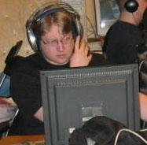
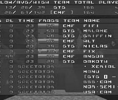

Dakoth: ”Winners come and go, but those who enjoy the game stay forever”
Sweden is the country of most of the famous QuakeWorld players. However, there are still plenty of players who play on high level but don’t get as much attention as some of the others. Dakoth might be one of these players who aren’t so well recognised, yet play with the big boys. If you don’t know Dakoth as a top-player, then you should at least know him for producing multiple great QuakeWorld maps. Keep on reading to find out dakoth’s opinions when we visited topics from QuakeWorld to console gaming and from leagues to map making!
The man, the person.

Dakoth, whose real name is Pontus Englund, is 26 years old and currently lives in in Luleå, Sweden. A normal day in the life of Pontus includes a lot of QuakeWorld but he also admits to watch a lot of TV-series, like ”Upwards 20” at the moment. For a living, Pontus does small programming projects. The basics of Haskell and Java he learnt by studing at Luleå university but during his spare time he has also picked up C++ and php. Programming however is not the only thing Pontus does in his spare time as he told me his other gaming experiences:”I played everquest for about 7 years, replaced that with WoW for another 1-2 years, but nowadays it’s mostly QW. I just bought a Nintendo DS though, and lemme just say that Phantom Hourglass kicks ass! ^^”
It doesn’t come as surprise that he enjoys QuakeWorld the most but why he enjoys it so much is mainly because of the physics of the game. ”No other fps has ever been able to replace the high-speed physics that qw “accidentally” created. Everything else that’s great about the game can be directly traced back to the physics.” When I asked how he would react if the physics of QuakeWorld would be changed, he said that it all depended on how drastic the change would be. In his opinion, fallbunny for example isn’t that big of a deal but removing bunnyhopping would surely kill the joy of the game for him.
Console gaming is not a doomed idea, or is it?
Console gaming comes as the secondary option for most gamers but as of yet Dakoth doesn’t own any of the latest console machines such as Wii or Playstation 3. However, he told me that he has been waiting for PS3’s price to drop and final fantasy 13 to hit the shelves of local gaming shops. On the other hand, he also admits to be a ”Zelda freak” and as Wii’s price is not that high he isn’t willing to give up this option either. In the end he sums up the answer by saying: ”I might just end up buying both.”
As dakoth showed to have an interest in consoles, I couldn’t hesitate to ask what he thought about competitive console gaming. ”I think the consoles have taken a great step towards adapting to competitive gaming with the new gen consoles. Adding support for keyboard+mouse control is a great plus as far as FPS gaming goes, and even handhelds like the NDS have far better FPS-controls (via stylus-aiming, see Metroid Prime Hunters) than top-of-the-line old gen consoles like the ps2, xbox, etc ever could accomplish. They’re still a bit behind the PC I’d say, but they’re getting there.”
Our favourite game, QuakeWorld.
Without going too deep in the console discussions we switched back to the real mens game: QuakeWorld.
Dakoth has just recently joined a new team, which is the swedish team Suddendeath. What about the comeback of GTG you might ask yourself? This is how dakoth explained the situation with GTG:
”Well, it all started with EQL really. We had a great first lineup with mrlame, griffin, niclas and me, but we all knew that we wouldn’t be able to play with this lineup in EQL, so we were pretty happy with a div2 placement, since we could flesh out that lineup with less experienced players that we’ve always had to put on the bench before.
Sadly, we got moved to div1 in the last instance, and with mrlame raiding 19-24 every day, and the rest of us being unavailable at other times, we never really stood a chance of getting our top lineup back together again. I guess the interest just died down after a few weeks of inactivity, because griffin and niclas reactivated their wow accounts and I joined SD :)”
It was not hard to notice that dakoth was slightly disappointed how things went with GTG, but when I asked if he would rather play with active GTG instead of SD, the answer was just what you could expect from a player like dakoth. ”SD have some great guys in it, and I’m honoured to be part of their team, but GTG is always gonna feel like “home” to me. I’m just happy to be able to play competitive qw again.”
It’s obvious that one of the things that still keeps him playing is the competition, but to have fun is about just as big a reason for him. ”Winners come and go, but those who enjoy the game stay forever.” said Dakoth.

Dakoth has played QuakeWorld for years and therefore I decided to ask him a question that people who have played hundreds or even thousands of games, might find a little hard. However for him, it didn’t seem like hard question at all because within a minute I was told the following: ”NQR7, semis vs CMF, dm2 - we were about 10 frags up, having lost control of highrl/quad completely, and with about 3 minutes to go. CMF kept sending quads to low and we kept killing them, and in the end we won with a 2 frag margin.”One thing that QuakeWorld tournaments have always lacked a little is the prize money. For dakoth this didn’t seem to be the problem because what attracts him more than prize money is a larger community which he thinks we would have if we had things like sponsored tournaments and such. Dakoth said he believes that there’s a lot of gamers out there who pick other games simply because of the chance to win a pot o’ gold. ”they don’t know the great game they’re missing.” he added.
Our gaming equipment, ezQuake.
As dakoth is an oldschool player, I just had to ask him how he felt about ezQuake and the new features like teamoverlay and what they brought to the community.
”I think I’ve been one of the more noticeable voices in the debate of new features. It’s hard to cover such a broad topic in something as short as this, but I’ll try. First off, I think it’s great that devs are working on new features and improvements for the game we all love.
But I think we also need to keep in mind that we have disabled a lot of “improvements” in the past as well, so both the devs and the players should be ready for stuff like teamoverlay not being allowed in competitive gameplay. The best thing is just to keep an open discussion about new features and let every voice be heard. In the end, a consensus can be reached about what’s good and what’s bad.”
It is understandable that an oldschool player doesn’t want his long loved game to be changed and I believe there are a lot of people who would give thumbs up for his words. ezQuake is being actively developed but are they going in the right direction? Dakoth had the following to say about this:
”I think client development is going in so many directions at once, it’s hard to say either yes or no to that question. :) There is certainly some really good stuff in there, but on the other hand there are some things that feel more like “fluff” than anything else. I think it’s all about taking in the good and filtering out what isn’t necessary (as far as competitive gameplay goes).”
Competing is not always smooth as silk.
From the clients we moved on to the current active leagues, European Quake League and NoName Quake League. According to dakoth, NNQL is running pretty well but he personally finds the 6-map pool a little problematic and would prefer to see 5 or 7 maps instead. EQL has also had its problems for dakoth and his teams. As mentioned earlier, GTG had the division issue and now as dakoth has joined Suddendeath. The ”max 2-players added during season” rule is his next annoyance. Dakoth said it’s understandable to stay hard on rules but he also hopes that they can convince the EQL admins that it’s in their best interest to keep Suddendeath active rather than inactive.
Dakoth is not the kind of player you could spot watching games on qizmo every night but if there’s a good game going, and he knows about it, it’s likely that he is going to try and spectate it.
Slackers II have surprised some people this season of EQL, but for dakoth their results didn’t seem surprising at all. I asked if this is because of the addition of striker to the lineup but that wasn’t quite the case. ”Sure, striker is a big addition to the squad, but one player doesn’t make a team, and SR2 were active and showing good prac results long before striker joined them. I wouldn’t be surprised if they give SR1 a run for the money in the playoffs!”
Maps, maps, maps, all about maps!
As a map maker, dakoth certainly wouldn’t mind custom maps being included in the leagues. He even believes there’s custom maps out there with more potential in them than the current TB3. However, everyone knows the cold fact that it is very hard to get people to play custom maps - especially in leagues. Dakoth believes the reason lies in the learning process.
”The learning curve is steep. It’s taken people a long time to reach the level of teamplay and skill they have on TB3 at this point, and when they try a new map for the first time, they just feel lost. They don’t know where to go, when to go there, and what to do.”
You might wonder what inspires people to make custom maps even if they know the stubbornness of the QuakeWorld community. For dakoth, map making is fun and that’s what keeps him doing it. Dakoth says that he knows that most people won’t even see the maps, but also knows that there is a little group of people that appreciate the maps and that’s enough for him.
When I asked him what the favourite map out of the ones he has made is, he replied ”ruins, hands down”. He also believes that ruins has the potential that it could be used along with TB3. To back up his feelings about his own masterpiece he said the following:
”I think ruins is a very hard map to learn. it has the dm2-element of an rl out in the open, up for grabs (the only one on the map), combined with a quad that’s very easy to get to (e1m2) and not a lot of armors around (just a YA). I think it’ll be even harder to survive on than on e1m2. I would love to see it in a league, but at the same time, I think people need to learn it first or they’ll just hate it from the start.”
Quick fire!
EQL or NQR?
NQR
fuhquake or ezQuake?
ezQuake
qwdrama or quakeworld.nu?
quakeworld.nu (sorry!)
griffin or reload?
griffin of course.
100 frags or 100% effi?
100% effi :)
Kurwa or pidaraz?
Kurwa is a classic, so I’ll go with that.
WoW or poker?
Poker, but only cause WoW is the devil!
Nice one.